Terminal styles
/ 1.8Five looks: Mono, Cozy, PowerShell, CMD and Ubuntu. Each has its own boot, panic and crash screens, fonts and app icon.
You’ll like it:
A minimal Pomodoro timer and task list for iPhone that looks like your terminal. Focus blocks, breaks, tasks and a live Dynamic Island, in English and Vietnamese.
Get it:
Free · iPhone with iOS 26 or later · installed with a free Apple Account in about 10 minutes
SideStore source:
https://github.com/notanlee/focus-timer/releases/latest/download/source.json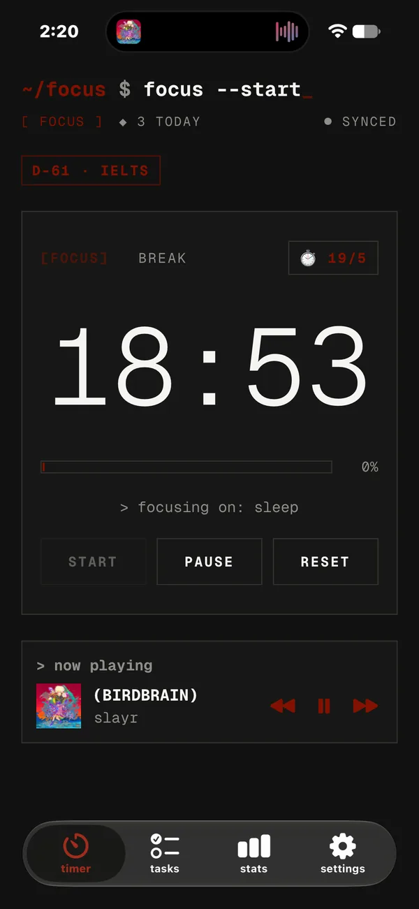
Focus · session 1
25:00
tap the timer or the island · it’s live
(08)
Five looks: Mono, Cozy, PowerShell, CMD and Ubuntu. Each has its own boot, panic and crash screens, fonts and app icon.
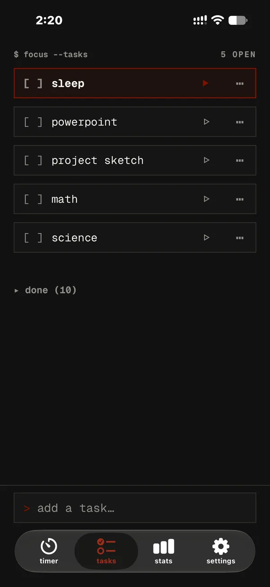
A short task list that syncs across your devices. Drag to reorder; focusing a task moves it to the top.
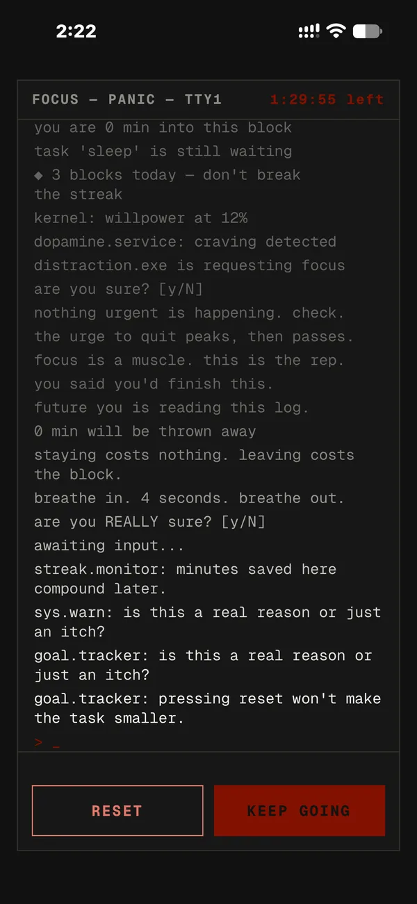
Hold reset and a terminal pleads with you to keep going while the timer keeps running. Give up and it crashes in your style.
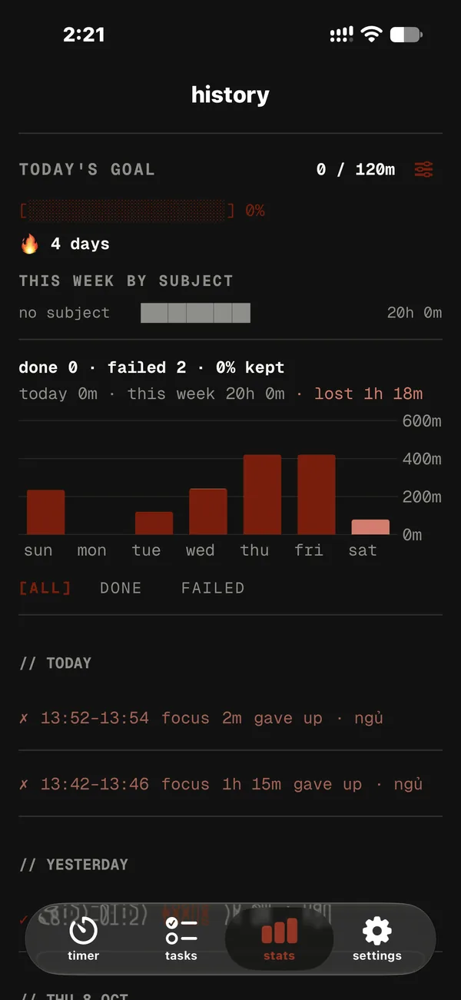
A weekly chart and every block you ran: done, failed and kept %, with filters for finished or failed blocks.
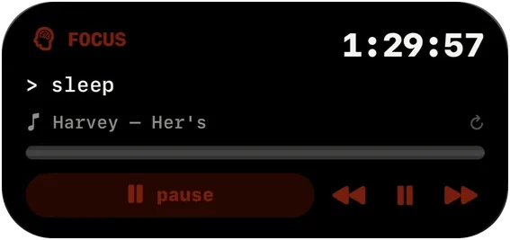
A live countdown in the Dynamic Island and on the Lock Screen. Hold it to pause or switch modes. Home Screen widgets too.
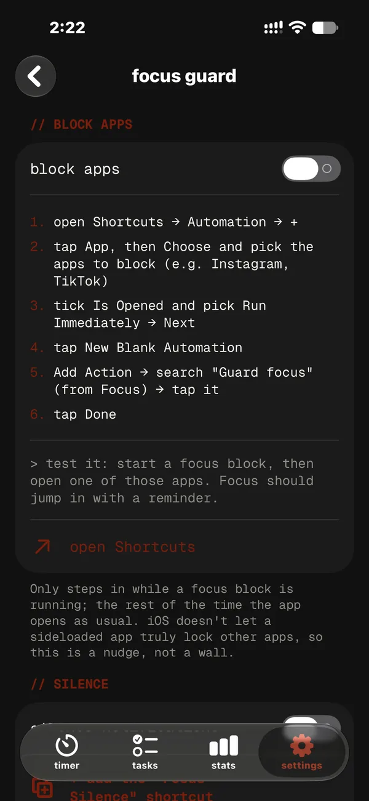
With your own Shortcuts automations: opening a distracting app jumps back to the timer, and notifications go quiet during a block.
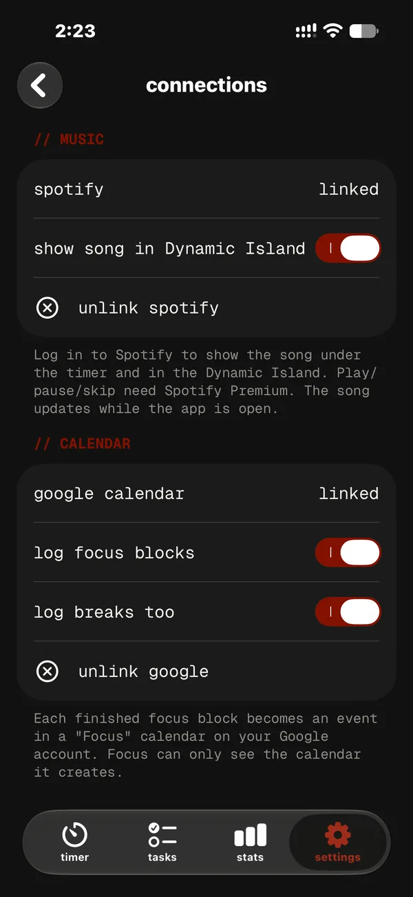
Optional: log each finished focus block to a “Focus” calendar. Details below.
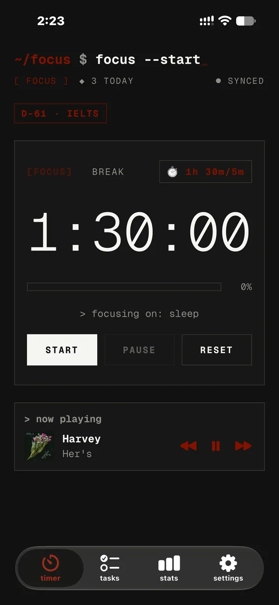
Optional: see and control what’s playing without leaving the timer.
Google Calendar:
How Focus uses Google Calendar. Connecting Google Calendar is optional. When you connect, Focus creates one secondary calendar named “Focus” in your Google account and adds an event to it each time you finish a focus block (and each break, if you turn that on). Focus requests only the calendar.app.created permission, so it can access only the calendar it created — it cannot see, change or delete your other calendars or events. You can unlink at any time in the app’s Settings.
Read the Privacy Policy for full details.
Only in $ Focus
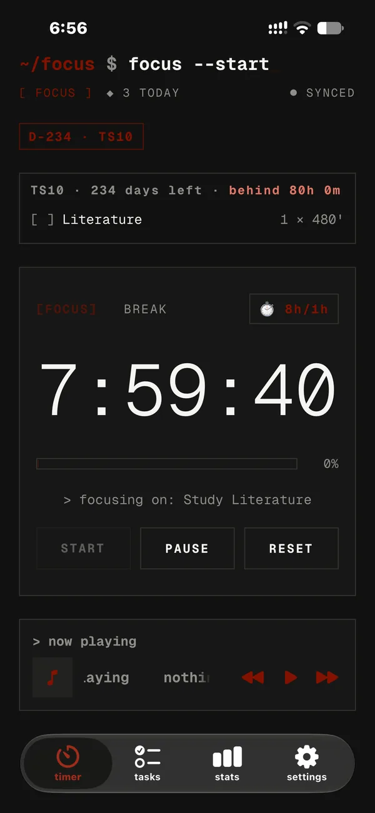
Pick your exam’s subjects and weak spots. Every day the timer shows exactly what to study, and the plan adapts to what you actually did.
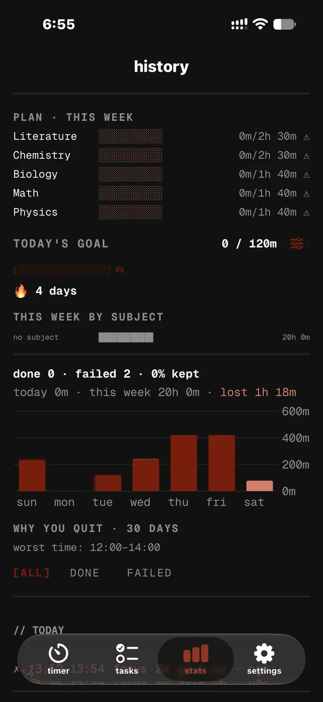
Stats compares each subject’s target with what you studied this week, and flags what’s behind.
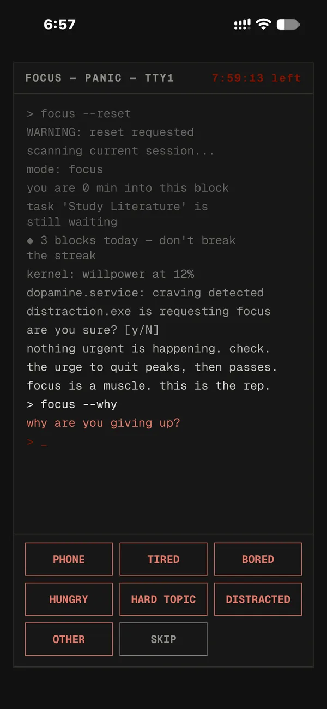
Give up on a block and Focus asks why: phone, tired, bored, hungry, hard topic…
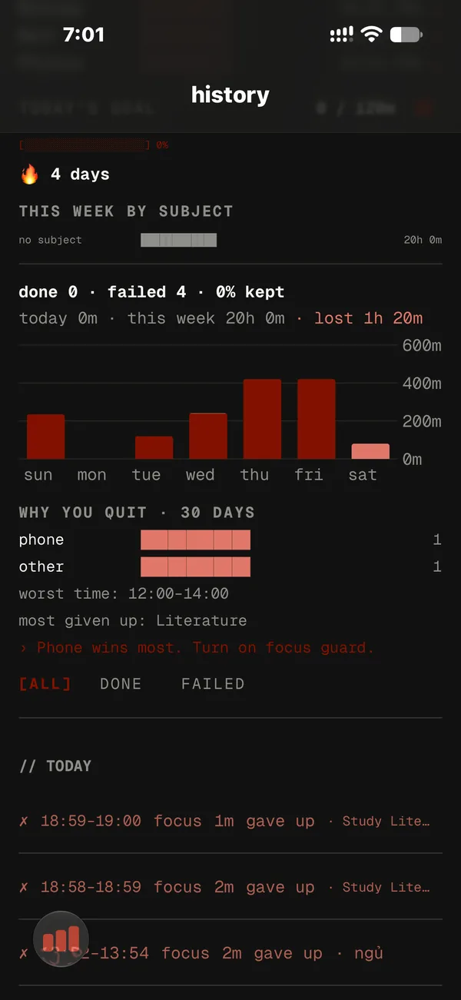
See your top reasons, the hour you quit most, the subject you give up on, and one tip that fits.
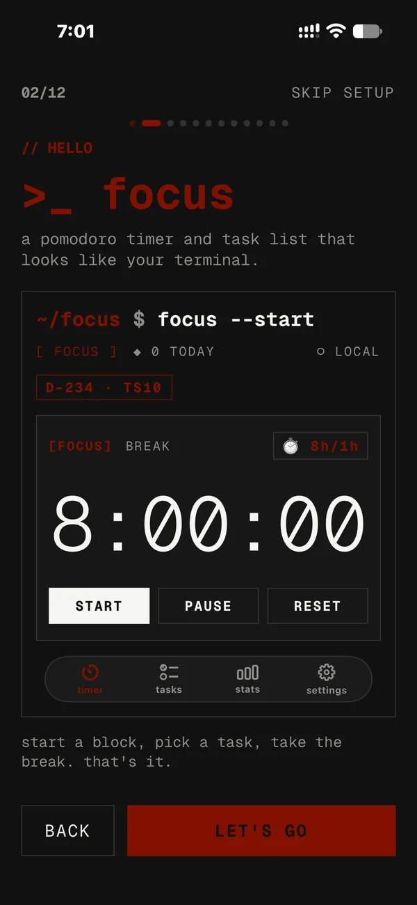
A first-run guide that previews the real app, with a study page for your exam and daily goal.
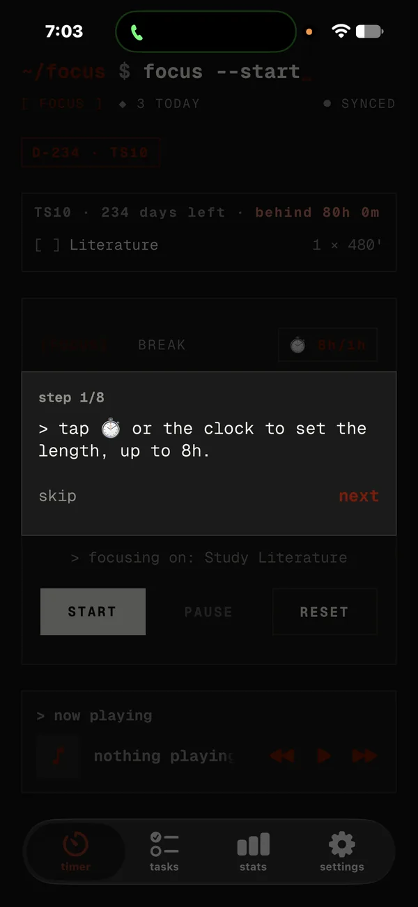
The tips tour measures the real buttons and switches tabs to show you around.
For students
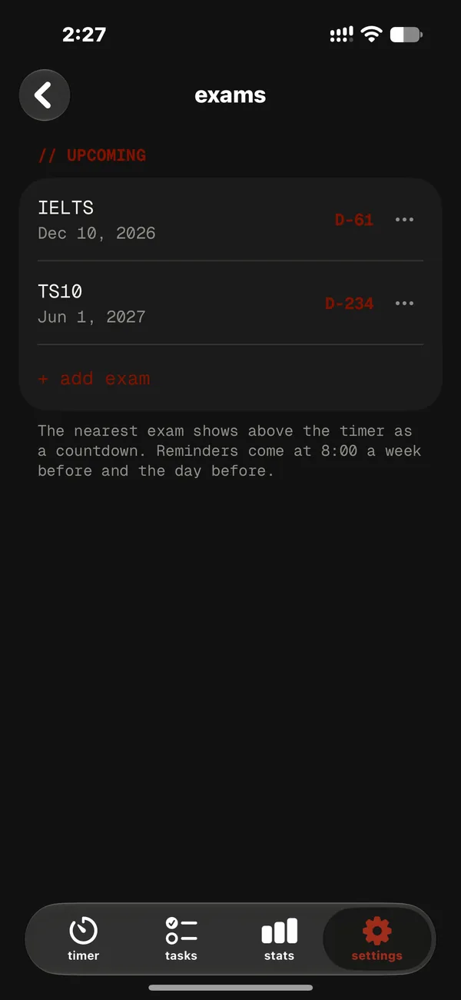
Add your exams and see the days left right on the timer, like D-45 · THPT.
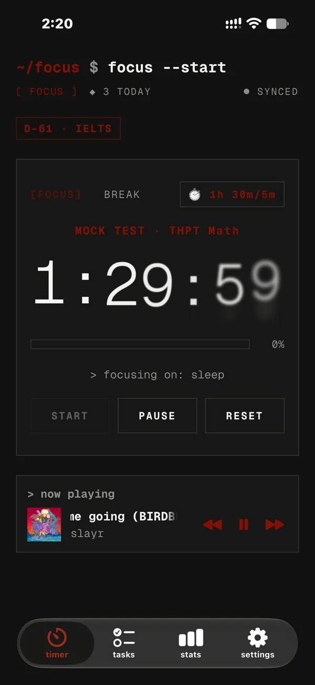
Practise with timers set to real exam lengths for THPT, IELTS and SAT.
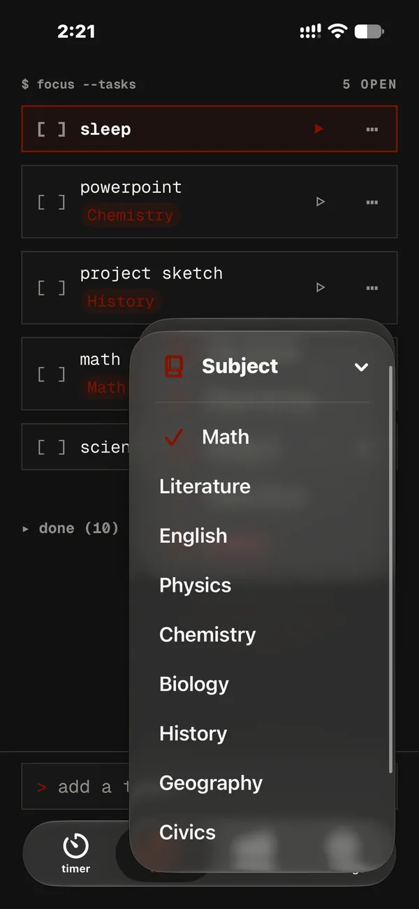
Label tasks by subject, see where your time goes, set a daily study goal and keep your streak.
A daily goal meter, a streak and minutes per subject on the new Stats tab.
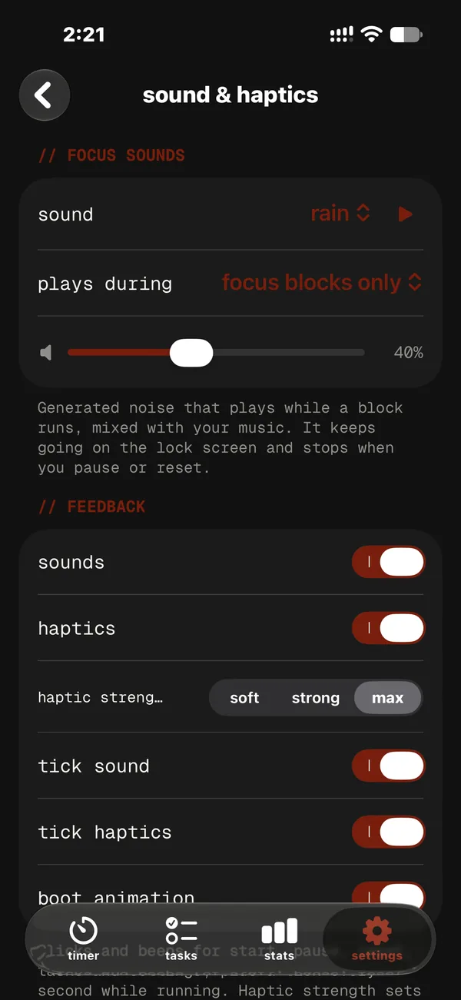
Built-in rain, ocean and noise that keep playing while you focus.
How it works:
Focus is installed by sideloading with a free Apple ID. Follow the step-by-step install guide for Windows or Mac.
(08)
Yes. $ Focus is free, with no ads, no analytics and no tracking.
Focus isn’t on the App Store, so you install it yourself with a free Apple Account using iloader (Windows or Mac) or SideStore. Free installs expire after 7 days: re-install with iloader, or let SideStore refresh it for you. The install guide walks you through it in about 10 minutes.
No. Everyone starts as an anonymous guest whose tasks and sessions are backed up automatically. Create an email account (a 6-digit code, no password) only if you want to sync across devices.
Your tasks and session history sync to our database. Settings, custom sounds and focus guard stay on your device. No ads, analytics or tracking, and we never sell your data. The Privacy Policy has every detail.
The timer, the island and your task list run on your iPhone. Sync, Spotify and Google Calendar need a connection; calendar events wait on your device until you’re back online.
Both are optional. Spotify needs your Spotify account, and access may be limited to invited accounts. Google Calendar needs a Google account and asks only for the calendar.app.created permission, so Focus can reach only the “Focus” calendar it creates.
Yes. The app and this website are fully in English and Vietnamese. Switch here with EN / VI at the top; in the app, pick your language during setup or in Settings.
Any iPhone with iOS 26 or later. Phones without a Dynamic Island show the timer as a Live Activity on the Lock Screen.
Questions, bugs or data requests:
notanleeNote:
Focus is an independent project and is not affiliated with, endorsed by or sponsored by Google, Spotify or Apple.